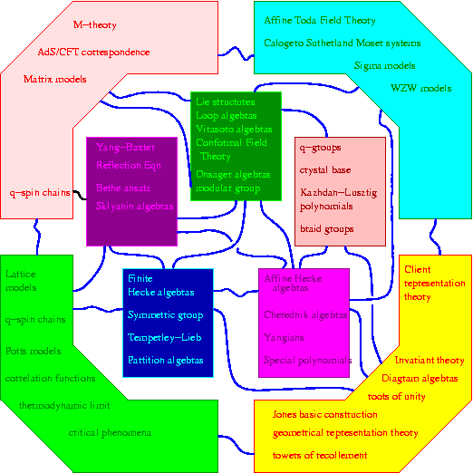

Description
In recent years there has been strong cross-fertilisation of ideas between
methods of representation theory
(for example of quantum groups and of diagram algebras)
and computational statistical mechanics,
including integrable lattice models.
There are analogous connections between
representation theory and IQFT.

Recently the same ideas in statistical mechanics
have been applied to problems in
string theory, and in particular to the AdS/CFT correspondence.
Thus spin chains, Bethe ansatz,
Yang-Baxter equations, Yangians, R- and S-matrices, models of strongly
correlated electrons, integrable sigma models, and so on now appear in
several different fields of theoretical physics.
It is anticipated that
these emergent applications will in turn inspire new avenues of research
in statistical mechanics,
and in representation theory itself.
The purpose of the workshop to bring together
researchers in these fields.
The idea is to assess the status of this topic, and to
motivate and inspire future research.
We also aim to promote communication between theorists
across disciplines, whether mathematicians or physicists.
The program will include overview talks on relevant aspects
of representation theory,
string, condensed matter and field theory. It will
attempt to review recent developments, and allow good time
for discussion. So as to achieve these goals, the list of talks will
only be finalized in the weeks preceding the meeting.
Speakers
Speakers are so far scheduled to include:
Full list with titles and (where possible) abstracts will appear
here.
Registration
To register please email Paul Martin on
p.p.martin@city.ac.uk,
stating which days you want to attend.
If you want to use our block-booked local accommodation (see below) please
also state which nights
(by default the booking is 10-th to 14-th December).
Delegates wishing to use this facility should make their needs known
no later than 1st November.
There will be limited funds available to partially support expenses
for PhD students attending the meeting.
Applications should be made no later than 10-th October.
Travel Info
The Centre for Mathematical Science is located on the
main campus of City University.
City University is situated in the centre of London, close to
Kings Cross station and Angel undeground.
The various University Main Campus rooms used by the meeting
(U214, U215, CM121, CM507,...) are shown
here.
Accommodation
Hotel accommodation will be organised close to the conference venue.
We have block-booked a number of twin rooms in a good nearby hotel
(particularly convenient also for Kings Cross Station) at
around £100 per night.
These are suitable either for two delegates sharing
(hence £50 per night each - the conference
organisers can arrange partners for shares if desired);
or for individual delegates.
We also have some budget accommodation block-booked (also not too far away)
at around £33 per night.
Typical hotel accommodation in this area is £90-100 per night for a
double room.
Here are the details for delegates staying at
Rosebery Hall:
This is student hall for the LSE, but very close to City University
MAP 1;
MAP 2;
Address: 90 Rosebery Avenue, Islington, EC1R 4TY
Conference Dinner
Date and Time: Thursday 14th December 2006, 7pm
;
Venue:
Balcony Bistro, (at the Barbican Centre)
Traditional Christmas dinner (with a glass on mulled wine on arrival!)
Price: about £23 per person (for meal and glass of mulled wine but excluding other drinks)
Organisers
|
Scientific Committee:
|
Local organisers:
|
Links:
Conference Photographs:
1,
2,
Sister meetings:
On Non-Commutative Rings, Group Rings, Diagram Algebras, and Applications
December 18-22, Madras.
M-Theory in the City (QMUL) November 9-11, QMUL.
Related conferences and workshops:
Integrability in Gauge and String Theory
Accommodation search:
Hotels
|
|
Themes in the interface of representation theory and physics
Conference and Workshop
11-15 December 2006
Centre for Mathematical Science, City University, LONDON
|
|
|
{kind=link}
{kind=link}
{kind=link}
{kind=link}